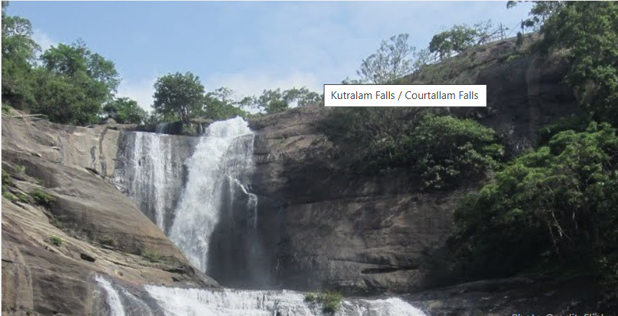

Today I Am Going To Talk About My Home Town
Location & Landscape
Tenkasi is located in the southern part of Tamil Nadu, close to the Kerala border. The region is part of the lush Western Ghats, giving it a cool climate, green hills, and abundant waterfalls. It serves as a gateway to Courtallam, a popular hill station known for its medicinal waterfalls.
Cultural & Religious Significance
The centerpiece of Tenkasi is the Kasi Viswanathar Temple, dedicated to Lord Shiva. Built in the 13th century by Parakrama Pandya, it is renowned for its majestic gopuram (tower), intricate carvings, and spiritual significance. Devotees believe visiting this temple is equivalent to visiting Kashi (Varanasi) in North India.
Natural Attractions
Courtallam Falls: A cluster of waterfalls known for therapeutic properties.
Five Falls, Main Falls, and Old Falls are especially popular during the monsoon.
Nearby trekking spots and nature reserves attract eco-tourists and adventure seekers.
Connectivity
Tenkasi is well-connected by train (Tenkasi Junction) and road. It is about 55 km from Tirunelveli and close to Kerala’s Kollam district, making it accessible from both states.
Local Life & Food
Tenkasi has a laid-back charm with bustling local markets, traditional Tamil cuisine (like parotta, dosa, and filter coffee), and artisan handicrafts. The town reflects a blend of Tamil and Kerala influences in its culture and dialect.
Let me know if you want help planning a trip with itinerary ideas, weather tips, or temple timings.
